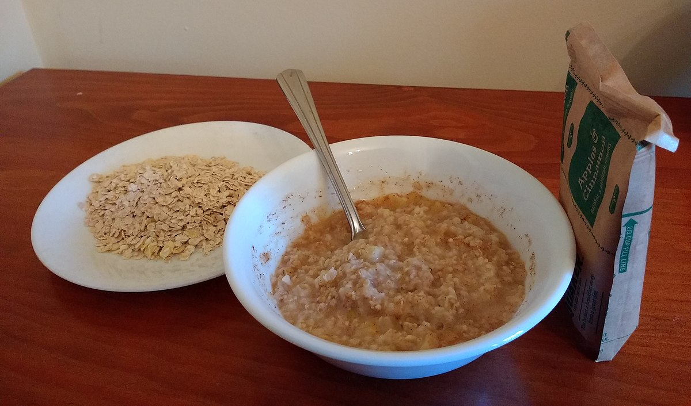

My favorite recipe
Oatmeal
Ingredients
- 1 cup of oatmeal
- 1 cup of water (warm, optional)
- Medium sized bowl
- Mixing spoon
- Eating spoon
Instructions
- Pour oatmeal into bowl
- Add about half of the water
- Stir the mixture with the mixing spoon
- Keep adding water until the consistency is how you like it
- Eat the oatmeal with the eating spoon
This is a great recipe when you're away from home.